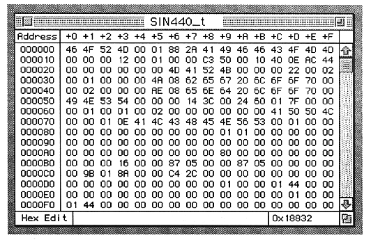

Return to previous page ｜ Return to menu ｜ Go to next page
●Hex Edit
- Sets the edit window to the hexadecimal display screen.

The functions used in this window are:
Cursor
- The data of the cursor part currently selected is highlighted.
- Scrolls automatically when the mouse is dragged out of the display range of the list.
Keyboard
- Numerical values from 0 to 9 and A to F can be entered for the data at the cursor position.
View
- Loop Start and Loop End Address data is bold.
Scroll bar
- Performs the same processing as a general scroll bar.
RAM usage
- Displays the waveform size in hexadecimal.
Window
- The file name is displayed in the title bar.
- The size box and scroll bar comply with the standard specifications.
Return to previous page ｜ Return to menu ｜ Go to next page